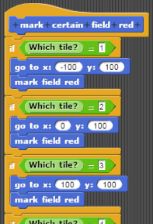
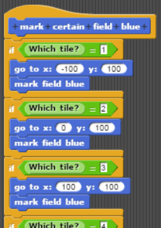
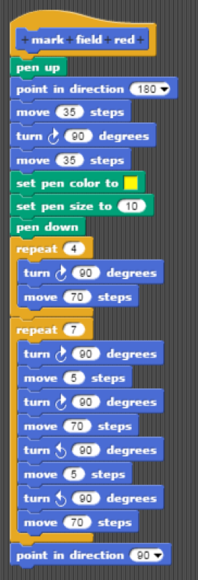
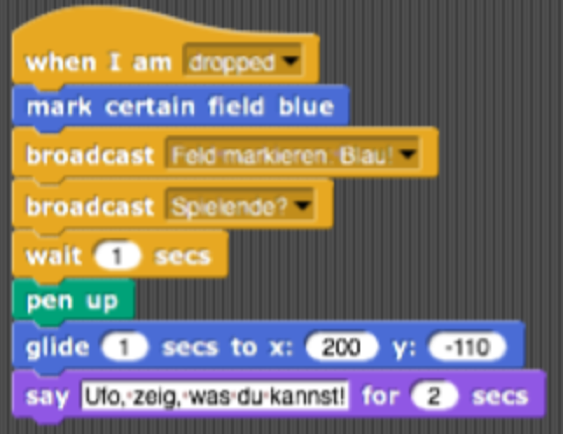

Nun zu den Markierungen, also den Färbungen der Spielfeldzellen in der Farbe, die dem Spieler entspricht, der den Zug gemacht hat: Wir haben uns, für unsere Tic-Tac-Toe Galaxy, dafür entschieden, die Markierungen auf dem Spielfeld schlicht zu halten. Im Gegensatz zum originalen Tic-Tac-Toe haben diese eine quadratische Form, die sich für den Spieler nur in ihrer Farbe unterscheiden, Form und Größe sind für beide Sprites gleich. Dies ist nicht nur Geschmackssache, sondern hat auch einen praktischen Nutzen. Da die Grundstruktur beider Markierungen gleich ist, musste diese nur einmal überlegt, durchdacht und programmiert werden. Damit die Markierungen stets symmetrisch sind, beginnt der Sprite seine Zeichnung in der Mitte der Spielfeldzelle. Die Koordinaten dieser Mitte mussten für jede der neun Zellen definiert und mit dem oben genannten Reporter in Verbindung gebracht werden. Die Bilder stellen zwar den zweiten Schritt des Programmierens dar, die hier gewählte Chronologie ist für den Leser jedoch leichter zu verstehen und begreifen.


Von der Mitte der jeweiligen Spielfeldzelle aus beginnend, nimmt der Sprite nun wieder die Rolle des „Stiftes“ ein, der eine Linie von definierter Breite und Farbe hinter sich zieht, sobald er sich über die Stage bewegt. Doch bevor der Sprite mit dem Zeichnen beginnt, begibt er sich in eine Ecke der Zelle, was Symmetrie garantiert und das Programmieren erleichtert. Von dieser Ecke ausgehend, zeichnet der Sprite also ein Quadrat der Kantenlänge 70. Anschließend füllt er das Quadrat aus, mithilfe einer Hin- und Herbewegung, die siebenfach wiederholt und mit jeder Wiederholung fünf Schritte nach oben versetzt wird. Diese fünf Schritte sind an die Stiftbreite angepasst und wechseln sich mit den siebzig Schritten ab, die es braucht, um eine „Bahn“ zu ziehen. Auf den unteren Bildern sind die individuell erstellten Blöcke zu sehen, die die Markierungen der beiden Spieler, Sprite2 und Sprite3, definieren. Zum Verständnis: Bevor wir das Programm endgültig designt haben, hatten die Sprites noch rote und blaue Markierungen und selbst die entsprechende Farbe. „Rot“ entspricht nun der gelben Markierung des Ufos, „Blau“ entspricht der grauen Markierung des Astronauten.

Im Verlauf des Spiels haben beide Spieler die Möglichkeit, die Sprites auf eine der Spielfeldzellen zu ziehen, und sie dort abzusetzen, um eine Markierung vorzunehmen. Dazu werden die eben erklärten und erstellten Blöcke genutzt, die ein bestimmtes Feld in einer bestimmten Farbe markieren können.

Nachdem die Sprites also die gewollte und gewünschte Spielfeldzelle markiert haben, senden sie zwei Broadcast-Nachrichten („Feld markieren: Blau!“ und „Spielende?“) und warten eine Sekunde, bevor sie zu ihrer ursprünglichen Position zurückkehren. Anschließend geben sie eine weitere Nachricht ab, jedoch nicht im Hintergrund des Geschehens, sondern für den Spieler sichtbar. Dieser soll dazu aufgefordert werden, die Maus weiterzugeben und mit dem nächsten Sprite eine Markierung auf dem Spielfeld zu machen. Das Ufo sagt nach einem vollendeten Spielzug: „Astronaut, du bist an der Reihe!“. Der Astronaut sagt nach einem vollendeten Spielzug: „Ufo, zeig, was du kannst!“